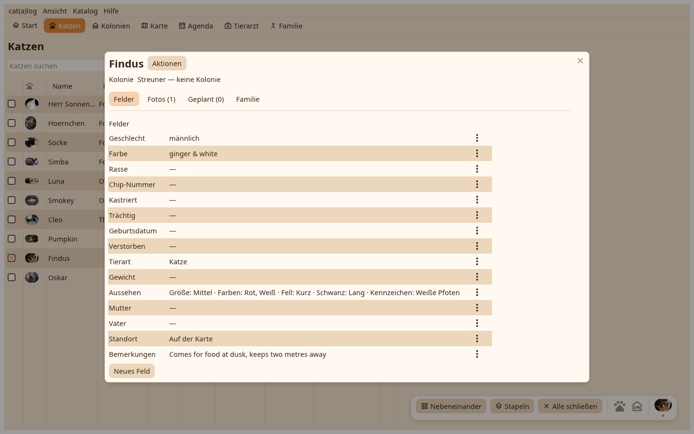
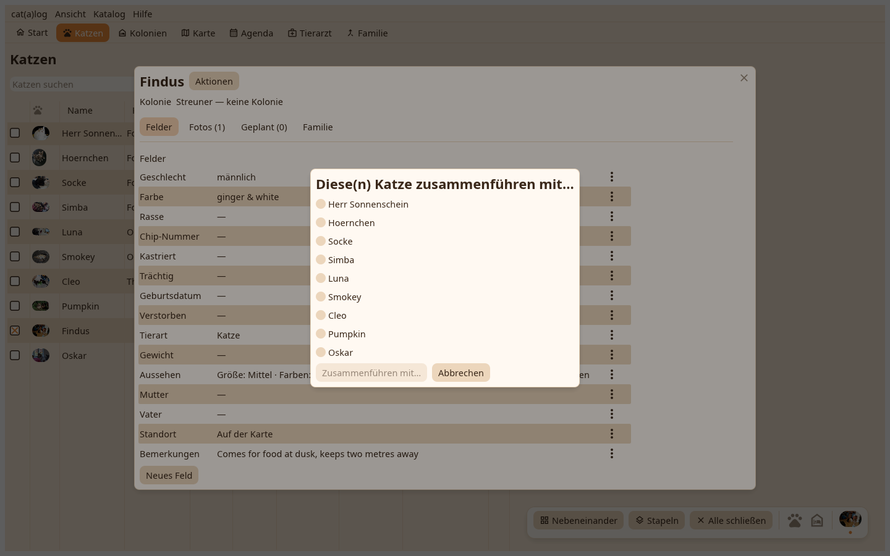

1. Die Seite
Die Seite des Datensatzes, der gehen wird, mit ihrem Aktionsmenü.

2. Das Zusammenführen
Diese Katze zusammenführen in… fragt nach dem Überlebenden und sagt, was sich bewegt. Zuerst wird ein Moment festgehalten; das Zusammenführen lässt sich nicht rückgängig machen.
